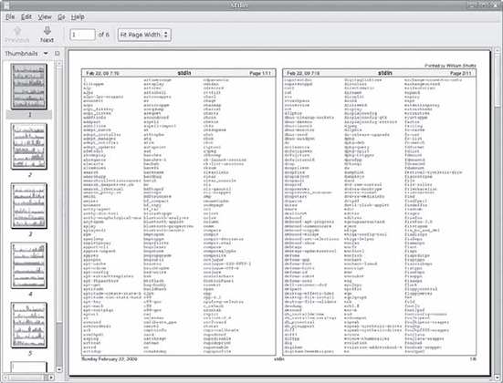

After spending the last couple of chapters manipulating text, it’s time to put that text on paper. In this chapter, we’ll look at the command-line tools that are used to print files and control printer operation. We won’t be looking at how to configure printing, as that varies from distribution to distribution and is usually set up automatically during installation. Note that we will need a working printer configuration to perform the exercises in this chapter.
前幾章我們學習瞭如何操控文字，下面要做的是將文字呈於紙上。在這章中，我們將會著手用於列印檔案和控制列印選項的命令列工具。通常不同發行版的列印配置各有不同且都會在其安裝時自動完成，因此這裡我們不討論列印的配置過程。本章的練習需要一臺正確配置的印表機來完成。
We will discuss the following commands:
我們將討論一下命令：
pr——Convert text files for printing.
pr —— 轉換需要列印的文字檔案
lpr——Print files.
lpr —— 列印檔案
lp——Print files (System V).
lp —— 列印檔案（System V）
a2ps——Format files for printing on a PostScript printer.
a2ps —— 為 PostScript 印表機格式化檔案
lpstat——Show printer status information.
lpstat —— 顯示印表機狀態資訊
lpq——Show printer queue status.
lpq —— 顯示印表機佇列狀態
lprm——Cancel print jobs.
lprm —— 取消列印任務
cancel——Cancel print jobs (System V).
cancel —— 取消列印任務（System V）
To fully understand the printing features found in Unix-like operating systems, we must first learn some history. Printing on Unix-like systems goes way back to the beginning of the operating system itself. In those days, printers and how they were used were much different from how they are today.
為了較好的理解類別 Unix 作業系統中的列印功能，我們必須先了解一些歷史。類別 Unix 系統中的列印可追溯到作業系統本身的起源，那時候印表機和它的用法與今天截然不同。
Like the computers themselves, printers in the pre-PC era tended to be large, expensive, and centralized. The typical computer user of 1980 worked at a terminal connected to a computer some distance away. The printer was located near the computer and was under the watchful eyes of the computer’s operators.
和計算機一樣，前 PC 時代的印表機都很大、很貴，並且很集中。1980年的計算機使用者都是在離電腦很遠的地方用一個連線電腦的終端來工作的，而印表機就放在電腦旁並受到計算機管理員的全方位監視。
When printers were expensive and centralized, as they often were in the early days of Unix, it was common practice for many users to share a printer. To identify print jobs belonging to a particular user, a banner page displaying the name of the user was often printed at the beginning of each print job. The computer support staff would then load up a cart containing the day’s print jobs and deliver them to the individual users.
由於當時印表機既昂貴又集中，而且都工作在早期的 Unix 環境下，人們從實際考慮通常都會多人共享一臺印表機。為了區別不同使用者的列印任務，每個列印任務的開頭都會列印一張寫著使用者名稱字的標題頁，然後計算機工作人員會用推車裝好當天的列印任務並分發給每個使用者。
The printer technology of the ’80s was very different in two respects. First, printers of that period were almost always impact printers. Impact printers use a mechanical mechanism that strikes a ribbon against the paper to form character impressions on the page. Two of the popular technologies of that time were daisy-wheel printing and dot-matrix printing.
80年代的印表機技術有兩方面的不同。首先，那時的印表機基本上都是打擊式印表機。打擊式印表機使用撞針打擊色帶的機械結構在紙上形成字元。這種流行的技術造就了當時的菊輪式列印和點陣式列印。
The second, and more important, characteristic of early printers was that they used a fixed set of characters that were intrinsic to the device itself. For example, a daisy-wheel printer could print only the characters actually molded into the petals of the daisy wheel. This made the printers much like high-speed typewriters. As with most typewriters, they printed using monospaced (fixed-width) fonts. This means that each character has the same width. Printing was done at fixed positions on the page, and the printable area of a page contained a fixed number of characters. Most printers printed 10 characters per inch (CPI) horizontally and 6 lines per inch (LPI) vertically. Using this scheme, a US-letter sheet of paper is 85 characters wide and 66 lines high. Taking into account a small margin on each side, 80 characters was considered the maximum width of a print line. This explains why terminal displays (and our terminal emulators) are normally 80 characters wide. It provides a WYSIWYG (What You See Is What You Get) view of printed output, using a monospaced font.
其次，更重要的是，早期印表機的特點是它使用裝置內部固定的一組字符集。比如，一臺菊輪式印表機只能列印固定在其菊花輪花瓣上的字元，就這點而言印表機更像是高速打字機。大部分打字機都使用等寬字型，意思是說每個字元的寬度相等，頁面上只有固定的區域可供列印，而這些區域只能容納固定的字元數。大部分印表機採用橫向10字元每英寸（CPI）和縱向6行每英寸（LPI）的規格列印，這樣一張美式信片紙就有橫向85字元寬縱向66行高，加上兩側的頁邊距，一行的最大寬度可達80字元。據此，使用等寬字型就能提供所見即所得（WYSIWYG，What You See Is What You Get）的列印預覽。
Data is sent to a typewriter-like printer in a simple stream of bytes containing the characters to be printed. For example, to print an a, the ASCII character code 97 is sent. In addition, the low-numbered ASCII control codes provided a means of moving the printer’s carriage and paper, using codes 286 Chapter 22 for carriage return, line feed, form feed, and so on. Using the control codes, it’s possible to achieve some limited font effects, such as boldface, by having the printer print a character, backspace, and print the character again to get a darker print impression on the page. We can actually witness this if we use nroff to render a man page and examine the output using cat -A:
接著，一臺類別打字機的印表機會收到以簡單位元組流的形式傳送來的資料，其中就包含要列印的字元。例如要列印一個字母a，計算機就會發送 ASCII 碼97，如果要移動印表機的滑動架和紙張，就需要使用回車、換行、換頁等的小編號 ASCII 控制碼。使用控制碼，還能實現一些之前受限制的字型效果，比如粗體，就是讓印表機先列印一個字元，然後退格再列印一遍來得到顏色較深的效果的。用 nroff 來產生一個手冊頁然後用 cat -A 檢查輸出，我們就能親眼看看這種效果了：
[me@linuxbox ~]$ zcat /usr/share/man/man1/ls.1.gz | nroff -man | cat -A | head
LS(1) User Commands LS(1)
$
$
$
N^HNA^HAM^HME^HE$
ls - list directory contents$
$
S^HSY^HYN^HNO^HOP^HPS^HSI^HIS^HS$
l^Hls^Hs [_^HO_^HP_^HT_^HI_^HO_^HN]... [_^HF_^HI_^HL_^HE]...$
^H (CTRL-H) characters are the backspaces used to create the boldface effect. Likewise, we can also see a backspace/underscore sequence used to produce underlining.
^H（ctrl-H）字元是用於列印粗體效果的退格符。同樣，我們還可以看到用於列印下劃線效果的[退格/下劃線]序列。
The development of GUIs led to major changes in printer technology. As computers moved to more picture-based displays, printing moved from character-based to graphical techniques. This was facilitated by the advent of the low-cost laser printer, which, instead of printing fixed characters, could print tiny dots anywhere in the printable area of the page. This made printing proportional fonts (like those used by typesetters), and even photographs and high-quality diagrams, possible.
圖形使用者介面（GUI）的發展催生了印表機技術中主要的變革。隨著計算機的展現步入更多以圖形為基礎的方式，列印技術也從基於字元走向圖形化技術，這一切都是源於鐳射印表機的到來，它不僅廉價，還可以在列印區域的任意位置列印微小的墨點，而不是使用固定的字符集。這讓印表機能夠列印成比例的字型（像用排字機那樣），甚至是圖片和高品質圖表。
However, moving from a character-based scheme to a graphical scheme presented a formidable technical challenge. Here’s why: The number of bytes needed to fill a page using a character-based printer can be calculated this way (assuming 60 lines per page, each containing 80 characters): 60 x 80 = 4,800 bytes.
然而，從基於字元的方式到轉移到圖形化的方式提出了一個嚴峻的技術挑戰。原因如下：使用基於字元的印表機時，填滿一張紙所用的位元組數可以這樣計算出來（假設一張紙有60行，每行80個字元)：60 × 80 = 4800位元組。
In comparison, a 300-dot-per-inch (DPI) laser printer (assuming an 8-by-10-inch print area per page) requires (8 x 300) x (10 x 300) / 8 = 900,000 bytes.
相比之下，用一臺300點每英寸（DPI）解析度的鐳射印表機（假設一張紙有8乘10英寸的列印區域）列印則需要 (8 × 300) × (10 × 300) / 8 = 900,000位元組。
Many of the slow PC networks simply could not handle the nearly 1 megabyte of data required to print a full page on a laser printer, so it was clear that a clever invention was needed.
當時許多慢速的個人電腦網路無法接受鐳射印表機列印一頁需要傳輸將近1兆的資料這一點，因此，很有必要發明一種更聰明的方法。
That invention turned out to be the page-description language. A page-description language (PDL) is a programming language that describes the contents of a page. Basically it says, “Go to this position, draw the character a in 10-point Helvetica, go to this position….” until everything on the page is described. The first major PDL was PostScript from Adobe Systems, which is still in wide use today. The PostScript language is a complete programming language tailored for typography and other kinds of graphics and imaging. It includes built-in support for 35 standard, high-quality fonts, plus the ability Printing 287 to accept additional font definitions at runtime. At first, support for Post- Script was built into the printers themselves. This solved the data transmission problem. While the typical PostScript program was verbose in comparison to the simple byte stream of character-based printers, it was much smaller than the number of bytes required to represent the entire printed page.
這種發明便是頁面描述語言（PDL）。PDL 是一種描述頁面內容的程式語言。簡單的說就是，“到這個地方，印一個10點大小的黑體字元 a ，到這個地方。。。” 這樣直到頁面上的所有內容都描述完了。第一種主要的 PDL 是 Adobe 系統開發的 PostScript，直到今天，這種語言仍被廣泛使用。PostScript 是專為印刷各類別圖形和影象設計的完整的程式語言，它內建支援35種標準的高品質字型，在工作時還能夠接受其他的字型定義。最早，對 PostScript 的支援是印表機本身內建的。這樣傳輸資料的問題就解決了。相比基於字元印表機的簡單位元組流，典型的 PostScript 程式更為詳細，而且比表示整個頁面的位元組數要小很多。
A PostScript printer accepted a PostScript program as input. The printer contained its own processor and memory (oftentimes making the printer a more powerful computer than the computer to which it was attached) and executed a special program called a PostScript interpreter, which read the incoming PostScript program and rendered the results into the printer’s internal memory, thus forming the pattern of bits (dots) that would be transferred to the paper. The generic name for this process of rendering something into a large bit pattern (called a bitmap) is raster image processor, or RIP.
一臺 PostScript 印表機接受 PostScript 程式作為輸入。印表機有自己的處理器和記憶體（通常這讓印表機比連線它的計算機更為強大），能執行一種叫做 PostScript 解析器的特殊程式用於讀取輸入的 PostScript 程式並產生結果匯入印表機的記憶體，這樣就形成了要轉移到紙上的位（點）圖。這種將頁面渲染成大型點陣圖（bitmap）的過程有個通用名稱作光柵影象處理器（raster image processor），又叫 RIP。
As the years went by, both computers and networks became much faster. This allowed the RIP to move from the printer to the host computer, which, in turn, permitted high-quality printers to be much less expensive.
多年之後，電腦和網路都變得更快了。這使得 RIP 技術從印表機轉移到了主機上，還讓高品質印表機變得更便宜了。
Many printers today still accept character-based streams, but many low-cost printers do not. They rely on the host computer’s RIP to provide a stream of bits to print as dots. There are still some PostScript printers, too.
現在的許多印表機仍能接受基於字元的位元組流，但很多廉價的印表機卻不支援，因為它們依賴於主機的 RIP 提供的位元流來作為點陣列印。當然也有不少仍舊是 PostScript 印表機。
Modern Linux systems employ two software suites to perform and manage printing. The first, CUPS (Common Unix Printing System), provides print drivers and print-job management; the second, Ghostscript, a PostScript interpreter, acts as a RIP.
當前 Linux 系統採用兩套軟體配合顯示和管理列印。第一，CUPS（Common Unix Printing System，一般 Unix 列印系統），用於提供列印驅動和列印任務管理；第二，Ghostscript，一種 PostScript 解析器，作為 RIP 使用。
CUPS manages printers by creating and maintaining print queues. As we discussed in our brief history lesson, Unix printing was originally designed to manage a centralized printer shared by multiple users. Since printers are slow by nature, compared to the computers that are feeding them, printing systems need a way to schedule multiple print jobs and keep things organized. CUPS also has the ability to recognize different types of data (within reason) and can convert files to a printable form.
CUPS 透過建立並維護列印佇列來管理印表機。如前所述，Unix 下的列印原本是設計成多使用者共享中央印表機的管理模式的。由於印表機本身比連線到它的電腦要慢，列印系統就需要對列印任務進行排程使其保持順序。CUPS 還能識別出不同型別的資料（在合理範圍內）並轉換檔案為可列印的格式。
As command line users, we are mostly interested in printing text, though it is certainly possible to print other data formats as well.
作為命令列使用者，儘管列印各種格式的文字都能實現，不過列印最多的，還是文字。
We looked at pr a little in the previous chapter. Now we will examine some of its many options used in conjunction with printing. In our history of printing, we saw that character-based printers use monospaced fonts, resulting in 288 Chapter 22 fixed numbers of characters per line and lines per page. pr is used to adjust text to fit on a specific page size, with optional page headers and margins. Table 23-1 summarizes the most commonly used options.
前面的章節我們也有提到過 pr 命令，現在我們來探討一下這條命令結合列印使用的一些選項。我們知道，在列印的歷史上，基於字元的印表機曾經用過等寬字型，致使每頁只能列印固定的行數和字元數，而 pr 命令則能夠根據不同的頁首和頁邊距排列文字使其適應指定的紙張。表23-1總結了最常用的選項。
| Option | Description |
|---|---|
| +first[:last] | Output a range of pages starting with first and, optionally, ending with last. |
| -columns | Organize the content of the page into the number of columns specified by columns. |
| -a | By default, multicolumn output is listed vertically. By adding the -a (across) option, content is listed horizontally. |
| -d | Double-space output. |
| -D format | Format the date displayed in page headers using format. See the man page for the date command for a description of the format string. |
| -f | Use form feeds rather than carriage returns to separate pages. |
| -h header | In the center portion of the page header, use header rather the name of the file being processed. |
| -l length | Set page length to length. Default is 66 lines (US letter at 6 lines per inch). |
| -n | Number lines. |
| -o offset | Create a left margin offset characters wide. |
| -w width | Set page width to width. Default is 72 characters. |
| 選項 | 描述 |
|---|---|
| +first[:last] | 輸出從 first 到 last（預設為最後）範圍內的頁面。 |
| -columns | 根據 columns 指定的列數排版頁面內容。 |
| -a | 預設多列輸出為垂直，用 -a (across)可使其水平輸出。 |
| -d | 雙空格輸出。 |
| -D format | 用 format 指定的格式修改頁首中顯示的日期，日期命令中 format 字串的描述詳見參考手冊。 |
| -f | 改用換頁替換預設的回車來分割頁面。 |
| -h header | 在頁首中部用 header 引數替換列印檔案的名字。 |
| -l length | 設定頁長為 length，預設為66行（每英寸6行的美國信紙）。 |
| -n | 輸出行號。 |
| -o offset | 建立一個寬 offset 字元的左頁邊。 |
| -w width | 設定頁寬為 width，預設為72字元。 |
pr is often used in pipelines as a filter. In this example, we will produce a directory listing of /usr/bin and format it into paginated, three-column output using pr:
我們通常用管道配合 pr 命令來做篩選。下面的例子中我們會列出目錄 /usr/bin 並用 pr 將其格式化為3列輸出的標題頁：
[me@linuxbox ~]$ ls /usr/bin | pr -3 -w 65 | head
2012-02-18 14:00 Page 1
[ apturl bsd-write
411toppm ar bsh
a2p arecord btcflash
a2ps arecordmidi bug-buddy
a2ps-lpr-wrapper ark buildhash
The CUPS printing suite supports two methods of printing historically used on Unix-like systems. One method, called Berkeley or LPD (used in the Berkeley Software Distribution version of Unix), uses the lpr program; the other method, called SysV (from the System V version of Unix), uses the lp program. Both programs do roughly the same thing. Choosing one over the other is a matter of personal taste.
CUPS 列印體系支援兩種曾用於類別 Unix 系統的列印方式。一種，叫 Berkeley 或 LPD（用於 Unix 的 Berkeley 軟體發行版），使用 lpr 程式；另一種，叫 SysV（源自 System V 版本的 Unix），使用 lp 程式。這兩個程式的功能大致相同。具體使用哪個完全根據個人喜好。
The lpr program can be used to send files to the printer. It may also be used in pipelines, as it accepts standard input. For example, to print the results of our multicolumn directory listing above, we could do this:
lpr 程式可以用來把檔案傳送給印表機。由於它能接收標準輸入，所以能用管道來協同工作。例如，要列印剛才多列目錄列表的結果，我們只需這樣：
[me@linuxbox ~]$ ls /usr/bin | pr -3 | lpr
The report would be sent to the system’s default printer. To send the file to a different printer, the -P option can used like this: lpr -P printer_name where printer_name is the name of the desired printer. To see a list of printers known to the system:
報告會送到系統預設的印表機，如果要送到別的印表機，可以使用 -P 引數：
lpr -P printer_name
printer_name 表示這臺印表機的名稱。若要檢視系統已知的印表機列表：
[me@linuxbox ~]$ lpstat -a
Note: Many Linux distributions allow you to define a “printer” that outputs files in PDF, rather than printing on the physical printer. This is very handy for experimenting with printing commands. Check your printer configuration program to see if it supports this configuration. On some distributions, you may need to install additional packages (such as cups-pdf) to enable this capability.
注意：許多 Linux 發行版允許你定義一個輸出 PDF 檔案但不執行實體列印的“印表機”，這可以用來很方便的檢驗你的列印命令。看看你的印表機配置程式是否支援這項配置。在某些發行版中，你可能要自己安裝額外的軟體包（如 cups-pdf）來使用這項功能。
Table 23-2 shows some of the common options for lpr.
表23-2顯示了 lpr 的一些常用選項
| Option | Description |
|---|---|
| -# number | Set number of copies to number. |
| -p | Print each page with a shaded header with the date, time, job name, and page number. This so-called “pretty print” option can be used when printing text files. |
| -P printer | Specify the name of the printer used for output. If no printer is specified, the system’s default printer is used. |
| -r | Delete files after printing. This would be useful for programs that produce temporary printer-output files. |
| 選項 | 描述 |
|---|---|
| -# number | 設定列印份數為 number。 |
| -p | 使每頁頁首標題中帶有日期、時間、工作名稱和頁碼。這種所謂的“美化列印”選項可用於列印文字檔案。 |
| -P printer | 指定輸出印表機的名稱。未指定則使用系統預設印表機。 |
| -r | 列印後刪除檔案。對程式產生的臨時列印檔案較為有用。 |
Like lpr, lp accepts either files or standard input for printing. It differs from lpr in that it supports a different (and slightly more sophisticated) option set. Table 23-3 lists the common options.
和 lpr 一樣，lp 可以接收檔案或標準輸入為列印內容。與 lpr 不同的是 lp 支援不同的選項（略為複雜），表23-3列出了其常用選項。
| Option | Description |
|---|---|
| -d printer | Set the destination (printer) to printer. If no d option is specified, the system default printer is used. |
| -n number | Set the number of copies to number. |
| -o landscape | Set output to landscape orientation. |
| -o fitplot | Scale the file to fit the page. This is useful when printing images, such as JPEG files. |
| -o scaling=number | Scale file to number. The value of 100 fills the page. Values less than 100 are reduced, while values greater than 100 cause the file to be printed across multiple pages. |
| -o cpi=number | Set the output characters per inch to number. Default is 10. |
| -o lpi=number | Set the output lines per inch to number. Default is 6. |
| -o page-bottom=points -o page-left=points -o page-right=points -o page-top=points |
Set the page margins. Values are expressed in points, a unit of typographic measurement. There are 72 points to an inch. |
| -P pages | Specify the list of pages. pages may be expressed as a comma-separated list and/or a range—for example 1,3,5,7-10. |
| 選項 | 描述 |
|---|---|
| -d printer | 設定目標（印表機）為 printer。若d 選項未指定，則使用系統預設印表機。 |
| -n number | 設定的列印份數為 number。 |
| -o landscape | 設定輸出為橫向。 |
| -o fitplot | 縮放檔案以適應頁面。列印影象時較為有用，如 JPEG 檔案。 |
| -o scaling=number | 縮放檔案至 number。100表示填滿頁面，小於100表示縮小，大於100則會列印在多頁上。 |
| -o cpi=number | 設定輸出為 number 字元每英寸。預設為10。 |
| -o lpi=number | 設定輸出為 number 行每英寸，預設為6。 |
| -o page-bottom=points -o page-left=points -o page-right=points -o page-top=points |
設定頁邊距，單位為點，一種印刷上的單位。一英寸 =72點。 |
| -P pages | 指定列印的頁面。pages 可以是逗號分隔的列表或範圍——例如 1,3,5,7-10。 |
We’ll produce our directory listing again, this time printing 12 CPI and 8 LPI with a left margin of one-half inch. Note that we have to adjust the pr options to account for the new page size:
再次列印我們的目錄列表，這次我們設定12 CPI、8 LPI 和一個半英寸的左邊距。注意這裡我必須調整 pr 選項來適應新的頁面大小：
[me@linuxbox ~]$ ls /usr/bin | pr -4 -w 90 -l 88 | lp -o page-left=36 -o cpi=12 -o lpi=8
This pipeline produces a four-column listing using smaller type than the default. The increased number of characters per inch allows us to fit more columns on the page.
這條命令用小於預設的格式產生了一個四列的列表。增加 CPI 可以讓我們在頁面上列印更多列。
The a2ps program is interesting. As we can surmise from its name, it’s a format conversion program, but it’s also much more. Its name originally meant ASCII to PostScript, and it was used to prepare text files for printing on PostScript printers. Over the years, however, the capabilities of the program have grown, and now its name means Anything to PostScript. While its name suggests a format-conversion program, it is actually a printing program. It sends its default output, rather than standard output, to the system’s default printer. The program’s default behavior is that of a “pretty printer,” meaning that it improves the appearance of output. We can use the program to create a PostScript file on our desktop:
a2ps 程式很有趣。單從名字上看，這是個格式轉換程式，但它的功能不止於此。程式名字的本意為 ASCII to PostScript，它是用來為 PostScript 印表機準備要列印的文字檔案的。多年後，程式的功能得到了提升，名字的含義也變成了 Anything to PostScript。儘管名為格式轉換程式，但它實際的功能卻是列印。它的預設輸出不是標準輸出，而是系統的預設印表機。程式的預設行為被稱為“漂亮的印表機”，這意味著它可以改善輸出的外觀。我們能用程式在桌面上建立一個 PostScript 檔案：
[me@linuxbox ~]$ ls /usr/bin | pr -3 -t | a2ps -o ~/Desktop/ls.ps -L 66
[stdin (plain): 11 pages on 6 sheets]
[Total: 11 pages on 6 sheets] saved into the file `/home/me/Desktop/ls.ps'
Here we filter the stream with pr, using the -t option (omit headers and footers) and then, with a2ps, specifying an output file (-o option) and 66 lines per page (-L option) to match the output pagination of pr. If we view the resulting file with a suitable file viewer, we will see the output shown in Figure 23-1.
這裡我們用帶 -t 引數（忽略頁首和頁尾）的 pr 命令過濾資料流，然後用 a2ps 指定一個輸出檔案（-o 引數），並設定每頁66行（-L 引數）來匹配 pr 的輸出分頁。用合適的檔案檢視器檢視我們的輸出檔案，我們就會看到圖23-1中顯示的結果。

圖 23-1: 瀏覽 a2ps 的輸出結果
As we can see, the default output layout is “two up” format. This causes the contents of two pages to be printed on each sheet of paper. a2ps applies nice page headers and footers, too.
可以看到，預設的輸出佈局是一面兩頁的，這將導致兩頁的內容被列印到一張紙上。a2ps 還能利用頁首和頁尾。
a2ps has a lot of options. Table 23-4 summarizes them.
a2ps 有很多選項，總結在表23-4中。
| Option | Description |
|---|---|
| --center-title text | Set center page title to text. |
| --columns number | Arrange pages into number columns. Default is 2. |
| --footer text | Set page footer to text. |
| --guess | Report the types of files given as arguments. Since a2ps tries to convert and format all types of data, this option can be useful for predicting what a2ps will do when given a particular file. |
| --left-footer text | Set left-page footer to text. |
| --left-title text | Set left-page title to text. |
| --line-numbers=interval | Number lines of output every interval lines. |
| --list=defauls | Display default settings. |
| --list=topic | Display settings for topic, where topic is one of the following: delegations (external programs that will be used to convert data), encodings, features, variables, media (paper sizes and the like), ppd (PostScript printer descriptions), printers, prologues (portions of code that are prefixed to normal output), stylesheets, or user options. |
| --pages range | Print pages in range. |
| --right-footer text | Set right-page footer to text. |
| --right-title text | Set right-page title to text. |
| --rows number | Arrange pages into number rows. Default is 1. |
| -B | No page headers. |
| -b text | Set page header to text. |
| -f size | Use size point font. |
| -l number | Set characters per line to number. This and the -L option (below) can be used to make files paginated with other programs, such as pr, fit correctly on the page. |
| -L number | Set lines per page to number. |
| -M name | Use media name—for example, A4. |
| -n number | Output number copies of each page. |
| -o file | Send output to file. If file is specified as -, use standard output. |
| -P printer | Use printer. If a printer is not specified, the system default printer is used. |
| -R | Portrait orientation |
| -r | Landscape orientation |
| -T number | Set tab stops to every number characters. |
| -u text | Underlay (watermark) pages with text. |
| 選項 | 描述 |
|---|---|
| --center-title text | 設定中心頁標題為 text。 |
| --columns number | 將所有頁面排列成 number 列。預設為2。 |
| --footer text | 設定頁尾為 text。 |
| --guess | 報告引數中檔案的型別。由於 a2ps 會轉換並格式化所有型別的資料，所以當給定檔案型別後，這個選項可以很好的用來判斷 a2ps 應該做什麼。 |
| --left-footer text | 設定左頁尾為 text。 |
| --left-title text | 設定頁面左標題為 text。 |
| --line-numbers=interval | 每隔 interval 行輸出行號。 |
| --list=defauls | 顯示預設設定。 |
| --list=topic | 顯示 topic 設定，topic 表示下列之一：代理程式（用來轉換資料的外部程式），編碼，特徵，變數，媒介（頁面大小等），ppd（PostScript 印表機描述資訊），印表機，起始程式（為常規輸出新增字首的程式碼部分），樣式表，或使用者選項。 |
| --pages range | 列印 range 範圍內的頁面。 |
| --right-footer text | 設定右頁尾為 text。 |
| --right-title text | 設定頁面右標題為 text。 |
| --rows number | 將所有頁面排列成 number 排。預設為1。 |
| -B | 沒有頁首。 |
| -b text | 設定頁首為 text。 |
| -f size | 使用字型大小為 size 號。 |
| -l number | 設定每行字元數為 number。此項和 -L 選項（見下方）可以給檔案用其他程式來更準確的分頁，如 pr。 |
| -L number | 設定每頁行數為 number。 |
| -M name | 使用列印媒介的名稱——例如，A4。 |
| -n number | 每頁輸出 number 份。 |
| -o file | 輸出到檔案 file。如果指定為 - ，則輸出到標準輸出。 |
| -P printer | 使用印表機 printer。如果未指定，則使用系統預設印表機。 |
| -R | 縱向列印。 |
| -r | 橫向列印。 |
| -T number | 設定製表位為每 number 字元。 |
| -u text | 用 text 作為頁面底圖（水印）。 |
This is just a summary. a2ps has several more options.
以上只是對 a2ps 的總結，更多的選項尚未列出。
Note: a2ps is still in active development. During my testing, I noticed different behavior on various distributions. On CentOS 4, output always went to standard output by default. On CentOS 4 and Fedora 10, output defaulted to A4 media, despite the program being configured to use letter-size media by default. I could overcome these issues by explicitly specifying the desired option. On Ubuntu 8.04, a2ps performed as documented. Also note that there is another output formatter that is useful for converting text into PostScript. Called enscript, it can perform many of the same kinds of formatting and printing tricks, but unlike a2ps, it accepts only text input.
注意：a2ps 目前仍在不斷的開發中。就我的測試而言，不同版本之間都多少有所變化。CentOS 4 中輸出總是預設為標準輸出。在 CentOS 4 和 Fedora 10 中，儘管程式配置信紙為預設媒介，輸出還是預設為 A4紙。我可以明確的指定需要的選項來解決這些問題。Ubuntu 8.04 中，a2ps 表現的正如參考文件中所述。 另外，我們也要注意到另一個轉換文字為 PostScript 的輸出格式化工具，名叫 enscript。它具有許多相同的格式化和列印功能，但和 a2ps 唯一的不同在於，它只能處理純文字的輸入。
As Unix printing systems are designed to handle multiple print jobs from multiple users, CUPS is designed to do the same. Each printer is given a print queue, where jobs are parked until they can be spooled to the printer. CUPS supplies several command-line programs that are used to manage printer status and print queues. Like the lpr and lp programs, these management programs are modeled after the corresponding programs from the Berkeley and System V printing systems.
由於 Unix 列印系統的設計是能夠處理多使用者的多重列印任務，CUPS 也是如此設計的。每臺印表機都有一個列印佇列，其中的任務直到傳送到印表機才停下並進行列印。CUPS 支援一些命令列程式來管理印表機狀態和列印佇列。想 lpr 和 lp 這樣的管理程式都是以 Berkeley 和 System V 列印系統的相應程式為依據進行排列的。
The lpstat program is useful for determining the names and availability of printers on the system. For example, if we had a system with both a physical printer (named printer) and a PDF virtual printer (named PDF ), we could check their status like this:
lpstat 程式可用於確定系統中印表機的名字和有效性。例如，我們系統中有一臺實體印表機（名叫 printer）和一臺 PDF 虛擬印表機（名叫 PDF），我們可以像這樣檢視印表機狀態：
[me@linuxbox ~]$ lpstat -a
PDF accepting requests since Mon 05 Dec 2011 03:05:59 PM EST
printer accepting requests since Tue 21 Feb 2012 08:43:22 AM EST
Further, we could determine a more detailed description of the print system configuration this way:
接著，我們可以檢視列印系統更具體的配置資訊：
[me@linuxbox ~]$ lpstat -s
system default destination: printer
device for PDF: cups-pdf:/
device for printer: ipp://print-server:631/printers/printer
In this example, we see that printer is the system’s default printer and that it is a network printer using Internet Printing Protocol (ipp:// ) attached to a system named print-server.
上例中，我們看到 printer 是系統預設的印表機，其本身是一臺網路印表機，使用網路列印協議（ipp://）透過網路連線到名為 print-server 的系統。
The commonly used options are described in Table 23-5.
lpstat 的常用選項列於表23-5。
| Option | Description |
|---|---|
| -a [printer...] | Display the state of the printer queue for printer. Note that this is the status of the printer queue’s ability to accept jobs, not the status of the physical printers. If no printers are specified, all print queues are shown. |
| -d | Display the name of the system’s default printer. |
| -p [printer...] | Display the status of the specified printer. If no printers are specified, all printers are shown. |
| -r | Display the status of the print server. |
| -s | Display a status summary. |
| -t | Display a complete status report. |
| 選項 | 描述 |
|---|---|
| -a [printer...] | 顯示 printer 印表機的佇列。這裡顯示的狀態是印表機佇列承受任務的能力，而不是實體印表機的狀態。若未指定印表機，則顯示所有列印佇列。 |
| -d | 顯示系統預設印表機的名稱。 |
| -p [printer...] | 顯示 printer 指定的印表機的狀態。若未指定印表機，則顯示所有印表機狀態。 |
| -r | 顯示列印系統的狀態。 |
| -s | 顯示彙總狀態。 |
| -t | 顯示完整狀態報告。 |
To see the status of a printer queue, the lpq program is used. This allows us to view the status of the queue and the print jobs it contains. Here is an example of an empty queue for a system default printer named printer :
使用 lpq 程式可以檢視印表機佇列的狀態，從中我們可以看到佇列的狀態和所包含的列印任務。下面的例子顯示了一臺名叫 printer 的系統預設印表機包含一個空佇列的情況：
[me@linuxbox ~]$ lpq
printer is ready
no entries
If we do not specify a printer (using the -P option), the system’s default printer is shown. If we send a job to the printer and then look at the queue, we will see it listed:
如果我們不指定印表機（用 -P 引數），就會顯示系統預設印表機。如果給印表機新增一項任務再檢視佇列，我們就會看到下列結果：
[me@linuxbox ~]$ ls *.txt | pr -3 | lp
request id is printer-603 (1 file(s))
[me@linuxbox ~]$ lpq
printer is ready and printing
Rank Owner Job File(s) Total Size
active me 603 (stdin) 1024 bytes
CUPS supplies two programs used to terminate print jobs and remove them from the print queue. One is Berkeley style (lprm), and the other is System V (cancel). They differ slightly in the options they support but do basically the same thing. Using our print job above as an example, we could stop the job and remove it this way:
CUPS 提供兩個程式來從列印佇列中終止並移除列印任務。一個是 Berkeley 風格的（lprm），另一個是 System V 的（cancel）。在支援的選項上兩者有較小的區別但是功能卻幾乎相同。以上面的列印任務為例，我們可以像這樣終止並移除任務：
[me@linuxbox ~]$ cancel 603
[me@linuxbox ~]$ lpq
printer is ready
no entries
Each command has options for removing all the jobs belonging to a particular user, particular printer, and multiple job numbers. Their respective man pages have all the details.
每個命令都有選項可用於移除某使用者、某印表機或多個任務號的所有任務，相應的參考手冊中都有詳細的介紹。